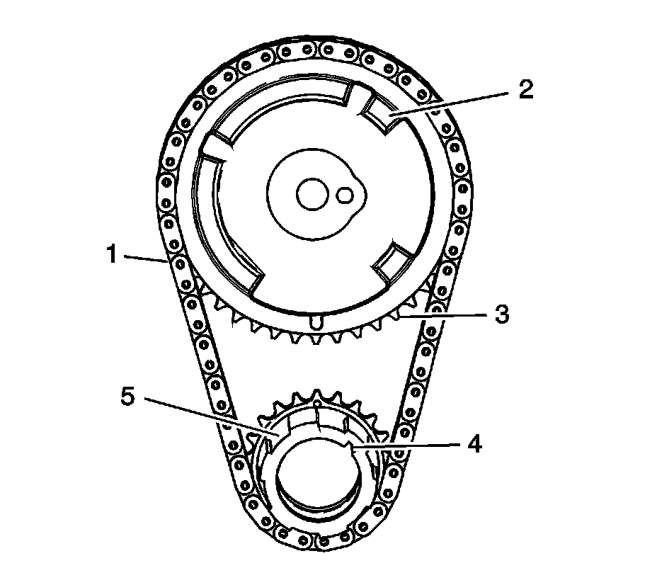

43. Timing Chain and Sprocket Cleaning and Inspection
Timing Chain and Sprockets Cleaning and Inspection

1. Clean the components with cleaning solvent.
Caution: Refer to Safety Glasses and Compressed Air Caution.
2. Dry the components with compressed air.
3. Inspect the timing chain (1) for binding or wear.
4. Inspect the camshaft position (CMP) sensor raised areas (2) for nicks or damage.
5. Inspect for worn, damaged, or chipped teeth (3).
6. Inspect for a damaged keyway (4).
7. Inspect for worn oil pump drive splines (5).

8. Inspect the timing chain tensioner for the following conditions:
^ Damaged or broken tension spring (1)
^ Excessive wear or scoring on the chain guide surfaces (2, 3)